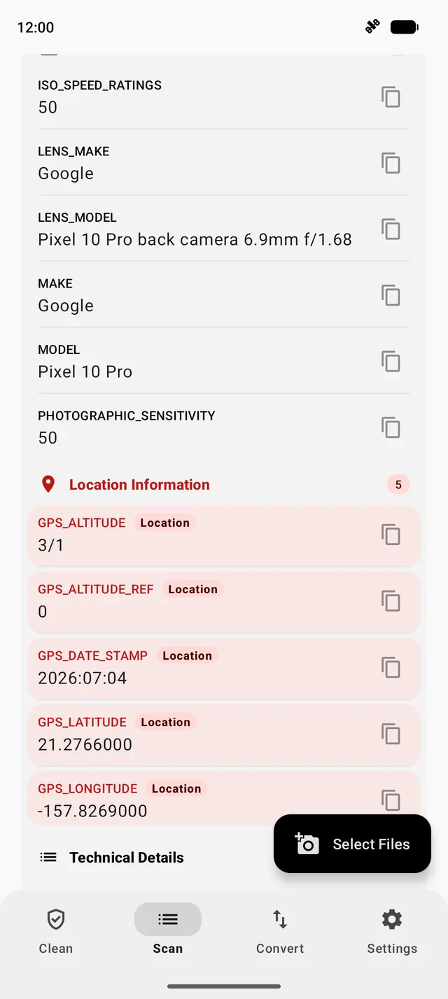
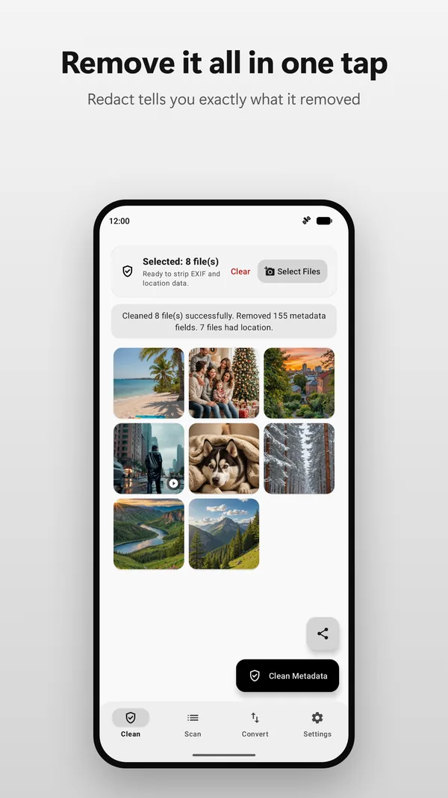
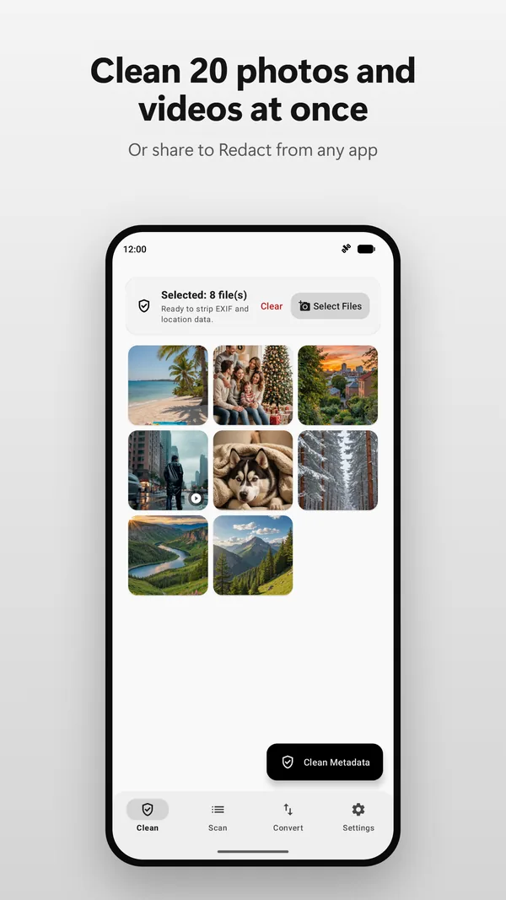
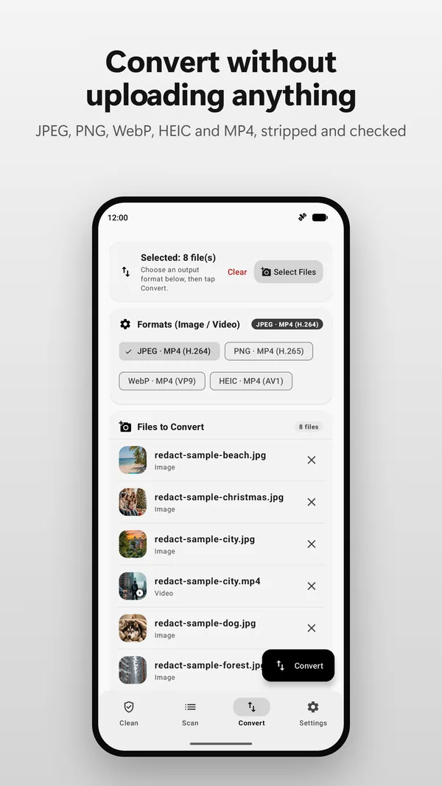

Your photos can reveal where you live
Every photo your phone takes can carry its exact GPS location, the date and time, and your phone's make and model. Redact shows you what a photo or video gives away, and removes it before you share, entirely on your Android phone.

See it, remove it, share it
Scan
Open any photo or video and see every hidden field in a clear, searchable list. Anything that shows where it was taken gets a Location badge.
Clean
Clean up to 100 photos and videos at once. Redact removes GPS, device details, timestamps, XMP, IPTC, comments and video tags, plus extra preview images and Motion Photo clips hidden after the picture, then tells you exactly what it removed.
Share safely
Share a photo to Redact from any app. It cleans the file and hands it straight back to the share sheet, so the clean copy is the one you send.



Who it's for
- Selling online. A photo of the thing you're selling, taken at home, can point straight to your address. How to sell online without giving away where you live.
- Dating and meeting new people. Send photos without sending your location.
- Parents. Share pictures of your kids, your home and your car with less risk.
- Journalists and activists. Protect sources and the places you work from.
- Anyone who emails photos or sends them as files. Those routes usually keep every hidden detail.
Private by design
- No ads, no analytics, no tracking and no account.
- Uses Android's own file picker, so Redact never needs access to your whole library.
- Optional crash reports stay off unless you turn them on, and never include your photos.
- Open source under the GPL-3.0 license: read the code on GitHub.
Questions
Does Redact upload my photos?
No. Cleaning, scanning and converting all run on your phone and need no internet connection. Redact has no ads, no analytics and no account.
What metadata does Redact remove?
GPS location, device make and model, timestamps, camera settings, XMP, IPTC and comments added by editing apps, data hidden after the picture such as extra preview images and Motion Photo clips, and video container tags such as location and creation time. Settings let you keep camera settings, or keep location on the Clean tab if you really want to; files shared into Redact always lose their location.
Are my original photos changed?
No. Redact saves a clean copy to Pictures/Redact or Movies/Redact (or folders you choose) and leaves the original alone, unless you turn on the option to move originals to the trash after cleaning.
Can it convert formats too?
Yes: JPEG, PNG, WebP and HEIC images, and H.264, H.265, VP9 and AV1 video. Converted files are stripped of metadata and checked.
Which Android versions does Redact support?
Android 12 and newer.